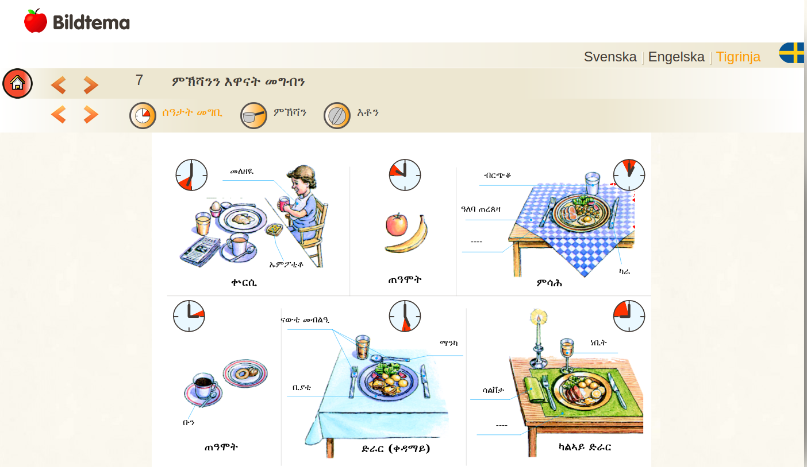
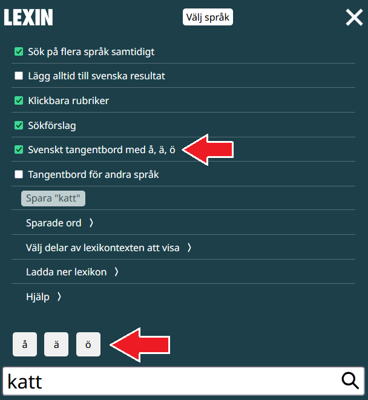
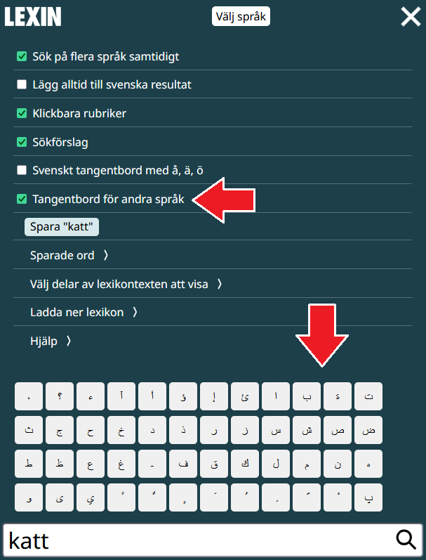
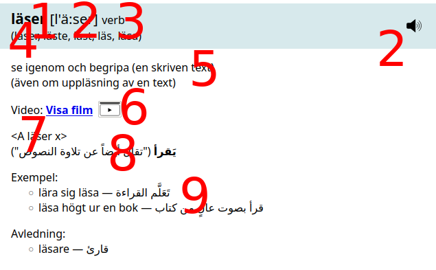

Hjälp
På denna sida kan du läsa om hur man använder Lexins webbplats, om hur man tolkar sökresultaten, och om Lexins syfte och bakgrund.
Hur man använder Lexin
Här kan du läsa om hur man använder de olika delarna av Lexins webbplats.
Språk

- Välj språk längst upp på sidan i rullistan "Språkval", t.ex. spanska.
- Du kan slå upp ord på flera språk genom att öppna "Visa inställningar" (knappen med tre streck "≡") och klicka på "Sök på flera språk samtidigt". Med knappen "Välj språk" kan du nu välja flera språk, genom att klicka på dem. Om du använder en mobil trycker du på de språk du vill välja.
- För att alltid få sökresultaten från den svenska ordboken, som har många ord, kan du också öppna "Visa inställningar" och klicka på "Lägg alltid till svenska resultat".
Bilder


- Många ord har bilder som hjälper till att förklara ordet. För att visa en bild, klicka på den lilla bildikonen "Visa bild i Lexin" bredvid texten "Bild:".
- Bilderna har också samlats i olika tematiska grupper, t.ex. ord som handlar om matlagning.
Videoklipp

- Ord kan ha ett eller flera videoklipp som visar vad ordet betyder.
- Du kan klicka på den lilla videoikonen "Visa videon i Lexin" bredvid texten "Video:" för att visa filmen.
- Om du inte vill se videoklippet mer kan du klicka på ikonen en gång till ("Stäng videon") för att gömma videon.
Ljud

- För att höra hur ett ord uttalas på svenska kan du klicka på högtalarsymbolen "Lyssna på uttalet".
- Ord kan ha flera sätt att uttalas. Då finns det flera alternativ för "Lyssna på uttalet".
Uttal
- Uttalet beskrivs också med fonetisk skrift, t.ex. "idag [ida:g] eller [ida:]".
- Kolon ":" betyder att ljudet före ska vara ett långt ljud.
- När det finns två eller flera uttal skrivs det med "eller" mellan uttalen. "[ida:g] eller [ida:]" betyder att det går att uttala sista bokstaven "g" och att det går att hoppa över "g", båda uttalen är okej.
- Det finns mer information om den fonetiska skriften längre ned på sidan.
Klicka på ord
- Rubriker i förklaringarna kan du klicka på för att öppna hjälpsidor. Om du inte vill att vissa rubriker ska öppna hjälpsidor kan du öppna "Visa inställningar" (knappen med tre streck "≡") och välja bort "Klickbara rubriker".
Tangentbord


- Du kan få hjälp med inmatning av tecken som din dator eller mobil saknar.
- Öppna "Visa inställningar" (knappen med tre streck "≡") och välj "Svenskt tangentbord med å, ä, ö" för att få upp tre knappar som kan mata in de svenska tecknen "å", "ä" och "ö" om din dator eller mobil inte har svenska tecken.
- Öppna "Visa inställningar" och välj "Tangentbord för andra språk" för att få hjälp med tecken på det språk som används i lexikonet du har valt. Om du har valt att söka i Lexin med arabiska översättningar får du hjälp med inmatning av arabiska tecken.
Spara ord


- Du kan spara ord du har slagit upp.
- Öppna "Visa inställningar" (knappen med tre streck "≡"). Där finns en "Spara"-knapp.
- För att se de ord du har sparat kan du klicka på "Sparade ord" under "Spara"-knappen.
- Du kan slå upp ett sparat ord genom att klicka på ordet i listan.
- Du kan sortera alla sparade ord i bokstavsordning med knappen "Sortera orden".
- Du kan ta bort alla sparade ord med knappen "Rensa listan".
Andra söktips
- För att få fram sammansatta ord gör du så här: Skriv "regn-" så får du fram alla ord med förledet regn. Skriv "-regn" så får du fram alla ord med efterledet regn.
- För att få större text kan du använda din webbläsares zoomfunktion. På en mobil kan du zooma med två fingrar på skärmen. På en dator kan du använda webbläsarens meny, eller Ctrl och plustecken (fungerar oftast på Windows och Linux) eller Cmd och plustecken (på Mac).
Ladda ner lexikon (Lexin offline)

- Du kan ladda ner ett eller flera lexikon från Lexin.
- När du har laddat ner ett lexikon kan du använda Lexin utan att ha tillgång till Internet.
Vad betyder sökresultaten?
Den svenska ordboken har ett annat innehåll än de tvåspråkiga ordböckerna. De tvåspråkiga ordböckerna innehåller i stort samma svenska uppslagsord förutom för några språk där inte alla ord har översatts. De språk som inte har alla ord är: amhariska, azerbajdzjanska, pashto, tigrinska och ukrainska. För en del ordlistor pågår arbete nu för att översätta fler ord tills de också får samma antal uppslagsord som de stora ordböckerna.
I de tvåspråkiga ordböckerna finns följande information: uppslagsordet, uttal, böjningsformer, och ordklass. Ofta finns det också översättning, grammatikkommentarer, ordförklaringar, stilkommentarer, sakupplysningar, grammatiska konstruktioner och språkexempel. Det kan också finnas bilder och video som förklarar ett ords betydelse.

I exemplet ovan finns:
- ett uppslagsord, "läser"
- uttal, i fonetisk skrift "[l'ä:ser]" och en ljudfil att lyssna på
- ordklass, "verb"
- böjningsformer, "läser, läste, läst, läs, läsa"
- ordförklaring, "se igenom och begripa (en skriven text) (även om uppläsning av en text)"
- video, en länk till ett videoklipp som visar vad ordet betyder
- grammatisk konstruktion, "<A läser x>"
- översättning, en översättning på det språk du har valt
- språkexempel, som visar hur ordet kan användas
Uppslagsord
Ett uppslagsord är normalt ett ord men det kan också vara ett uttryck med flera ord. Exempel på sådana uppslagsord är partikelverb (t.ex. tycker om) och samhällsord (t.ex. allmän rättshjälp).
Uppslagsord som är sammasatta ord är avdelade med lodstreck "|", t.ex. ordet rättshjälp som skrivs som rätts|hjälp och har bildats av orden rätt och hjälp. Lodstrecken är till för att underlätta förståelsen av långa och ofta krångliga ord.
I vissa sammansatta ord går det inte att sätta ut lodstreck. I sammansatta ord där det skulle bli tre likadana konsonanter i rad skrivs bara två konsonanter ut på svenska, t.ex. ägg + gula blir äggula. Tre konsonanter skrivs bara ut när man avstavar ordet, ägg-gula. Då markeras detta efter uppslagsordet, äggula (ägg-gula).
Ett uppslagsord kan följas av en alternativform. Det är ofta en annan form som har samma uttal men en annan stavning, t.ex. sjal och schal eller idag och i dag. Det kan också vara en talspråklig variant, t.ex. sedan och sen. Den första formen är då huvudformen och den form som rekommenderas. Uttal och böjningsformer gäller uppslagsordet, inte alternativformen.
Uttal
Lexin togs fram för att underlätta inlärningen av svenska för personer som har flyttat till Sverige. Därför finns information om uttal bara för de svenska orden, inte för översättningar.
Uttal visas med både fonetisk skrift, t.ex. [²ụ:ta:l], och med en ljudfil du kan lyssna på. Ljudfilerna beskrivs tidigare i texten.
- Lång vokal och lång konsonant visas med kolon ":"
- Betoning (tryck) visas med punkt " ̣" under vokalen
Visa mer information om uttal >
Längd
Långt ljud, både för konsonanter och vokaler, markeras med kolon ":" direkt efter den långa vokalen eller konsonanten. Jämför t.ex. skal [ska:l] och skall [skal:]. I ordet skal är a:et långt och l:et kort, och i ordet skall är a:et kort och l:et långt.
Allmänt är det så i tryckstarka stavelser att antingen är vokalen lång och den efterföljande konsonanten kort, eller också är vokalen kort och den efterföljande vokalen lång.
Tryck (betoning)
Huvudtryck (starkt tryck, betoning) markeras med en punkt " ̣" under vokalen i den betonade stavelsen, t.ex. betala [betạ:la] och vatten [vạt:en]. Enstaviga ord får ingen tryckmarkering.
Uppslagsformer som består av flera ord får uttalsmarkering som om de bestod av ett enda ord, t.ex. håller av [hål:erạ:v] och ger sig [jẹ:r‿sej].
I sammansatta ord finns inte bara huvudtryck, utan också s.k. bitryck (t.ex. -lag i landslag). Detta bitryck markeras indirekt genom längdtecknet kolon ":" [²lạn:dsla:g]. Om det finns tre längdtecken ligger bitrycket på stavelsen med det sista längdtecknet. I ordet studiebidrag [²stụ:djebi:dra:g] ligger huvudtrycket på stavelsen stu- och bitrycket på stavelsen -drag. Om det bara finns ett längdtecken i uttalsangivelsen betyder det att ingen stavelse har bitryck, t.ex. etisk [ẹ:tisk].
Tonaccent
I svenskan finns två sorters accenter. Akut accent (accent 1) är den accent som finns i enstaviga ord och många av deras böjningsformer: bil – bilen. Grav accent (accent 2) uppträder först och främst i sammansättningar (järnväg) men också i de flesta andra flerstaviga ord (flicka). Det här fenomenet kallas tonaccent. Ibland ser två ord helt lika ut men skiljer sig åt genom tonaccenten: anden som hör ihop med and har akut accent, och anden som hör ihop med ande har grav.
Grav accent anges i Lexin med en liten upphöjd tvåa "²" framför första bokstaven i ordet: [²dạ:ghem:], [²ạn:de]. När det inte finns någon tvåa utan bara tryckmarkering (eller ingen tryckmarkering alls), betyder det att ordet har akut accent: [bi:l], [an:d], [betạ:lar].
Det är vanligt att folk förstår även om man råkar använda "fel" tonaccent. Det finns svenska dialekter som saknar tonaccent.
Konsonanterna
Speciella symboler används bara för tj-ljudet, sj-ljudet och ng-ljudet, t.ex. tjugo [²çụ:go] och sjunga [ʃụŋ:a]. I övrigt används alfabetets vanliga tecken.
När konsonanten r följs av d, t, n, l eller s, smälter den i standardsvenska oftast ihop med den följande konsonanten; r+d, r+t etc. uppfattas som ett enda ljud. Detta markeras med en liten båge mellan r och d, r och t etc.: bord [bo:r‿d], bort [bår‿t:] etc.
Vokalerna
Bara alfabetets vokaltecken används. Samma tecken används för kort och lång vokal.
Kort e och kort ä sammanfaller i de flesta svenskars uttal – det är ingen skillnad på e/ä-ljuden i hem och säng. Vokalen betecknas i den fonetiska skriften i båda fallen med e. Kort e/ä framför r betecknas dock med ä.
Här följer exempel på ord med olika vokaler och deras uttalsangivelser:
| Vokal | Exempel |
|---|---|
| [a:] | sa [sa:], sal [sa:l] |
| [a] | hall [hal:], sagt [sak:t] |
| [e:] | be [be:], vet [ve:t] |
| [e] | vett [vet:], fäll [fel:] |
| [i:] | bi [bi:], sil [si:l] |
| [i] | sill [sil:], din [din:] |
| [o:] | sol [so:l], ro [ro:] |
| [o] | rott [rot:], ost [os:t] |
| [u:] | du [du:], hus [hu:s] |
| [u] | buss [bus:], hund [hun:d] |
| [y:] | by [by:], syl [sy:l] |
| [y] | lyx [lyk:s], synd [syn:d] |
| [å:] | gå [gå:], gås [gå:s] |
| [å] | gått [gåt:], om [åm:] |
| [ä:] | fä [fä:], säl [sä:l], bär [bä:r] |
| [ä] | färg [fär:j], herr [här:] |
| [ö:] | snö [snö:], söt [sö:t], bör [bö:r] |
| [ö] | möss [mös:], mörk [mör:k] |
Diftonger
Diftonger markeras med en båge mellan de två vokaltecknen, t.ex. automat [a‿otomạ:t].
Några regler för Uttal i böjningsformer
För de flesta ord ges uttalsuppgifter enbart för uppslagsformen. I många fall är det också lätt att räkna ut uttalet av alla böjningsformer om man känner till uppslagsformens uttal, men inte alltid. Det kan t.ex. vara så att huvudtrycket flyttas eller att tonaccenten ändras på ett oväntat sätt i vissa böjningsformer.
Två exempel på detta är orden doktor som heter doktorer [dåktọ:rer] i plural, och ven, som heter vener [vẹ:ner] i plural med akut accent, fastän de flesta liknande pluraler (t.ex. filmer) har grav accent. Sådana undantag i böjningsformerna anges i ordboken både för grundformen och för pluralformen, enligt följande exempel:
- doktor [dạ̊k:tor] eller [²dạ̊k:tor]
(doktor · doktorn · doktorer [dåktọ:rer] · doktorerna) - ven (2) [ve:n]
(ven · venen · vener [vẹ:ner] · venerna)
Om man känner till uttalet av uppslagsformen och ett litet antal regler, så kan man räkna ut uttalet av nästan alla böjningsformer. Här förenklar vi lite och talar bara om enstaviga ordformer och tvåstaviga ordformer med trycket på första stavelsen. (Flerstaviga ord med trycket efter första stavelsen har oftast akut accent både i grundformen och böjningsformerna.)
För substantiv ändras aldrig uppslagsformens tonaccent i bestämd form singular (bil – bilen, flicka – flickan). I obestämd form plural blir tonaccenten grav, om ändelsen är -ar, -er eller -or. Undantag är vissa substantiv med plural på -er, t.ex. ven som just nämndes. Dessa undantag anges alltså i ordboken. Om pluraländelsen är -n eller -r, så ändras inte tonaccenten. Inte heller ändras tonaccenten mellan obestämd och bestämd form plural.
För verben ges presensformen som grundform. Om den slutar på -ar (jagar), så har den grav accent, och om den slutar på -er (leker) har den akut accent ([²jạ:gar] respektive [lẹ:ker]). Övriga tvåstaviga verbformer med trycket på första stavelsen har grav accent – presensformen på -er är faktiskt ett undantag.
För adjektiven gäller att nästan alla tvåstaviga (och flerstaviga) böjningsformer får grav accent. Speciellt gäller detta vid komparation: (skön –) skönare – skönast. Undantag är ungefär 10 mycket vanliga adjektiv med korta komparativ- och superlativändelser, t.ex. lång, låg, hög och trång. Se listan under avsnittet Böjningsformer.
Ordklass
Ord tillhör en ordklass, t.ex. substantiv eller verb. De ordklasser som förekommer i ordböckerna är: substantiv, adjektiv, verb, adverb, preposition, pronomen, konjunktion, interjektion, räkneord, namn, artikel, infinitivmärke och förkortning. Det finns också två klasser förled och efterled som inte är riktiga ordklasser men används när uppslagsordet är förled eller efterled till sammansatta ord.
Visa mer information om ordklasser >
De ordklasser som förekommer i ordböckerna och exempel på ord från varje ordklass:
| Ordklass | Exempel |
|---|---|
| adjektiv | en blå bil |
| adverb | bilen går sakta, en mycket snabb bil |
| artikel | en blå bil, ett högt hus |
| förkortning | SR (= Sveriges Radio) |
| infinitivmärke | att simma |
| interjektion | Aj! Hallå! |
| konjunktion | om du vill så kommer jag |
| namn | Svenska Akademin |
| preposition | boken ligger på bordet |
| pronomen | jag känner henne inte |
| räkneord | en, två, tre |
| substantiv | hon äter glass |
| verb | hon äter glass |
Följande beteckningar är inte ordklasser i vanlig mening utan gäller delar av sammansatta ord:
| "Ordklass" | Exempel |
|---|---|
| förled | charter- |
| efterled | -tonnare |
Böjningsformer
För olika ordklasser visas olika böjningsformer. Böjningsformer som är enkla att förstå, t.ex. regelbundna adjektiv som fin, finare, finast finns inte med. När böjningen är oregelbunden finns böjningen alltid med, t.ex. stor, större, störst.
Om ett ord tillhör en ordklass som har böjningsformer men där just detta ord inte kan böjas står det oböjligt där böjningformerna brukar anges.
Visa mer information om böjningsformer >
De böjningsformer som ges för de olika ordklasserna är:
Substantiv
För substantiven ges tre böjningsformer utöver grundformen (om de finns), i tur och ordning bestämd form singular, obestämd form plural och bestämd form plural:
- bil
(bil · bilen · bilar · bilarna) - barn
(barn · barnet · barn · barnen)
- mat
(mat · mat · maten · – · –)
Normalt ger Lexin alltså fyra former av substantiven. Det finns ytterligare fyra former (s.k. genitivformer), som nästan alltid bildas genom att man lägger till ett -s: barns (t.ex. barns lekar), barnets, barnens etc. Om substantivet redan slutar på -s (hus), så lägger man inte till något -s i genitiv.
Adjektiv
För adjektiven ges två böjningsformer utöver grundformen, nämligen t-formen i singular och pluralformen:
- glad
(glad · glatt · glada)
Pluralformen används också efter bestämd artikel i singular: den glada flickan. Framför substantiv som betecknar pojkar eller män används dock ibland en form som slutar på -e: den glade mannen.
Många adjektiv, bl.a. glad, kan kompareras: gladare – gladast (Erik är gladare än Anna, Anders är gladast av alla). Med några få undantag, som anges i ordboken och finns i listan med oregelbundna adjektiv här nedanför, bildas komparationsformerna genom att man lägger till -are och -ast. Formen med -ast (superlativformen) kan i sin tur böjas: den gladaste pojken.
Det ska tilläggas att vissa adjektiv hellre kompareras med mer och mest än med ändelser. Dit hör adjektiv på -isk (praktisk) och -ande (förtjusande). Vid mycket långa adjektiv föredrar många också att komparera med mer och mest.
| Positiv | Komparativ | Superlativ |
|---|---|---|
| bra | bättre | bäst |
| dålig | sämre | sämst |
| gammal | äldre | äldst |
| god | godare/bättre | godast/bäst |
| grov | grövre | grövst |
| hög | högre | högst |
| liten | mindre | minst |
| låg | lägre | lägst |
| lång | längre | längst |
| stor | större | störst |
| trång | trängre/trångare | trångast/trängst |
| tung | tyngre | tyngst |
| ung | yngre | yngst |
Alla dessa komparativformer (utom godare och trångare) har akut accent till skillnad från komparativformer på -are, som alltid har grav accent.
Verb
För verben ges fem former utöver presensformen som är uppslagsform. På grammatiskt språk kallas de infinitiv, preteritum, supinum, perfekt particip och imperativ. Ett exempel är kastar: att kasta – kastade – har kastat – är kastad – kasta! De korta orden framför tre av böjningsformerna visar hur de används: "det är roligt att kasta boll", "Anna har kastat bollen till Erik", "bollen är kastad". Observera också utropstecknet efter den s.k. imperativ- eller uppmaningsformen: "Kasta bollen till mig!"
Också hos verben kan vissa former saknas, och då kan det se ut så här:
- regnar
(regnar · att regna · regnade · har regnat · – · –)
De former som saknas i ordboken är först och främst s.k. passiva former (jämför Anna kastade bollen – bollen kastades av Anna). Dessa former bildas helt enkelt genom att man lägger till ett -s till de former som ges i ordboken, utom perfekt participformen (kastas – kastades – kastats – kastas). Man måste dock observera att när man lägger till ett -s till imperativformen så får man den passiva form som hör till presens.
Vidare saknas former av typen kastande, jagande (s.k. presens particip). De påminner om adjektiv (ett jagande djur) och bildas genom att man lägger till ändelsen -nde till infinitivformen (om infinitivformen slutar på annan vokal än -a, som i tro, lägger man till -ende).
Slutligen ska det sägas att perfektparticipformen i sin tur kan böjas, ungefär som ett adjektiv: en kastad boll, ett kastat klot, de kastade bollarna (vid oregelbundna verb, t.ex. skjuter, blir likheten med adjektiv ännu större: en skjuten fågel, ett skjutet djur, de skjutna djuren).
Böjningen av verben är komplicerad, men utifrån de sex former som ordboken ger är det ändå ganska lätt att räkna ut de övriga formerna. I själva verket behövs inte så många former, och för alla regelbundna verb räcker det faktiskt med uppslagsformen. Detta tack vare att Lexin ger presensformen (jagar) och inte infinitivformen (jaga) som uppslagsform. Vi kan snabbt se hur det fungerar.
Om du bara kan infinitivformen jaga, så kan du inte veta om verbet böjs (felaktigt) jagde – jagt – jagd – jag! eller (riktigt) jagade – jagat – jagad – jaga! Men om du kan presensformen jagar, så kan du räkna ut alla de andra formerna, under förutsättning att du vet att verbet är regelbundet. Ändelsen i presens (-ar i jagar, -er i köper) ger en väldigt stark signal om verbets övriga böjningsformer. Därför används presensformen ofta som den memorerade formen vid undervisning i svenska som nybörjarspråk. (De få verb vars infinitivform slutar på annan vokal än -a, t.ex. tro, har en lite annorlunda, men förutsägbar, böjning: tror – tro – trodde – trott – trodd – tro!)
För att presensformen ska ge dig maximal information on övriga böjningsformer, bör du lära in drygt hundra oregelbundna verb och deras böjning. Du hittar dem i en tabell här:
Visa oregelbundna verb >
| presens | infinitiv | preteritum | supinum | perfekt particip | imperativ |
|---|---|---|---|---|---|
| ber | be | bad | bett | – | be! |
| begraver | begrava | begravde | begravt | begravd | begrav! |
| binder | binda | band | bundit | bunden | bind! |
| biter | bita | bet | bitit | biten | bit! |
| bjuder | bjuda | bjöd | bjudit | bjuden | bjud! |
| blir | bli | blev | blivit | bliven | bli! |
| brinner | brinna | brann | brunnit | brunnen | brinn! |
| brister | brista | brast | brustit | brusten | brist! |
| bryter | bryta | bröt | brutit | bruten | bryt! |
| bär | bära | bar | burit | buren | bär! |
| bör | böra | borde | bort | – | – |
| drar | dra | drog | dragit | dragen | dra! |
| dricker | dricka | drack | druckit | drick! | |
| driver | driva | drev | drivit | driven | driv! |
| duger | duga | dög | dugt | – | – |
| dyker | dyka | dök | dykt | – | dyk! |
| dör | dö | dog | dött | död | dö! |
| döljer | dölja | dolde | dolt | dold | dölj! |
| faller | falla | föll | fallit | fallen | fall! |
| far | fara | for | farit | faren | far! |
| finner | finna | fann | funnit | funnen | finn! |
| finns | finnas | fanns | funnits | – | – |
| flyger | flyga | flög | flugit | flugen | flyg! |
| flyter | flyta | flöt | flutit | fluten | flyt! |
| fryser | frysa | frös | frusit | frusen | frys! |
| får | få | fick | fått | – | få! |
| försvinner | försvinna | försvann | försvunnit | försvunnen | försvinn! |
| gal | gala | gol | galit | – | gal! |
| ger | ge | gav | gett/givit | given | ge! |
| gjuter | gjuta | göt | gjutit | gjuten | gjut! |
| glider | glida | gled | glidit | gliden | glid! |
| gläder | glädja | gladde | glatt | – | gläd! |
| gnider | gnida | gned | gnidit | gniden | gnid! |
| griper | gripa | grep | gripit | gripen | grip! |
| gråter | gråta | grät | gråtit | gråten | gråt! |
| går | gå | gick | gått | gången | gå! |
| gör | göra | gjorde | gjort | gjord | gör! |
| har | ha | hade | haft | – | ha! |
| heter | heta | hette | hetat | – | – |
| hinner | hinna | hann | hunnit | hunnen | hinn! |
| hugger | hugga | högg | huggit | huggen | hugg! |
| håller | hålla | höll | hållit | hållen | håll! |
| kan | kunna | kunde | kunnat | – | – |
| kliver | kliva | klev | klivit | kliven | kliv! |
| klyver | klyva | klöv | kluvit/klyvt | kluven/klyvd | klyv! |
| knyter | knyta | knöt | knutit | knuten | knyt! |
| kommer | komma | kom | kommit | kommen | kom! |
| kryper | krypa | kröp | krupit | krupen | kryp! |
| ler | le | log | lett | – | le! |
| lider | lida | led | lidit | liden | lid! |
| ligger | ligga | låg | legat | – | ligg! |
| ljuder | ljuda | ljöd | ljudit | ljuden | ljud! |
| ljuger | ljuga | ljög | ljugit | ljugen | ljug! |
| lyder | lyda | lydde/löd | lytt | lydd | lyd! |
| låter | låta | lät | låtit | låten | låt! |
| lägger | lägga | lade | lagt | lagd | lägg! |
| måste | – | måste | måst | – | – |
| niger | niga | neg | nigit | – | nig! |
| njuter | njuta | njöt | njutit | njuten | njut! |
| nyper | nypa | nöp | nypt | nupen | nyp! |
| nyser | nysa | nös/nyste | nyst | – | nys! |
| piper | pipa | pep | pipit | – | pip! |
| rider | rida | red | ridit | riden | rid! |
| rinner | rinna | rann | runnit | runnen | rinn! |
| river | riva | rev | rivit | riven | riv! |
| ryter | ryta | röt | rutit | ruten | ryt! |
| ser | se | såg | sett | sedd | se! |
| simmar | simma | simmade/sam | simmat/summit | summen | simma! |
| sitter | sitta | satt | suttit | sutten | sitt! |
| sjuder | sjuda | sjöd | sjudit | sjuden | sjud! |
| sjunger | sjunga | sjöng | sjungit | sjungen | sjung! |
| sjunker | sjunka | sjönk | sjunkit | sjunken | sjunk! |
| skiner | skina | sken | skinit | – | skin! |
| skiljer | skilja | skilde | skilt | skild | skilj! |
| skjuter | skjuta | sköt | skjutit | skjuten | skjut! |
| ska | skola | skulle | skolat | – | – |
| skrider | skrida | skred | skridit | skriden | skrid! |
| skriker | skrika | skrek | skrikit | skriken | skrik! |
| skriver | skriva | skrev | skrivit | skriven | skriv! |
| skryter | skryta | skröt | skrutit | skruten | skryt! |
| skälver | skälva | skälvde/skalv | skälvt | – | skälv! |
| skär | skära | skar | skurit | skuren | skär! |
| slipper | slippa | slapp | sluppit | – | slipp! |
| sliter | slita | slet | slitit | sliten | slit! |
| sluter | sluta | slöt | slutit | sluten | slut! |
| slår | slå | slog | slagit | slagen | slå! |
| slåss | slåss | slogs | slagits | – | slåss! |
| smyger | smyga | smög | smugit | – | smyg! |
| smälter | smälta | smälte/smalt | smultit/smält | smält | smält! |
| smörjer | smörja | smorde | smort | smord | smörj! |
| snyter | snyta | snöt | snutit | snuten | snyt! |
| sover | sova | sov | sovit | soven | sov! |
| spinner | spinna | spann | spunnit | spunnen | spinn! |
| sprider | sprida | spred | spritt/spridit | spridd | sprid! |
| springer | springa | sprang | sprungit | sprungen | spring! |
| sticker | sticka | stack | stuckit | stucken | stick! |
| stiger | stiga | steg | stigit | stigen | stig! |
| stjäl | stjäla | stal | stulit | stulen | stjäl! |
| strider | strida | stred | stridit | – | strid! |
| stryker | stryka | strök | strukit | struken | stryk! |
| står | stå | stod | stått | – | stå! |
| super | supa | söp | supit | supen | sup! |
| svider | svida | sved | svidit | – | svid! |
| sviker | svika | svek | svikit | sviken | svik! |
| sväljer | svälja | svalde | svalt | svald | svälj! |
| svälter | svälta | svalt | svultit | svulten | svält! |
| svär | svära | svor | svurit | svuren | svär! |
| säger | säga | sa/sade | sgat | sagd | säg! |
| säljer | sälja | sålde | sålt | såld | sälj! |
| sätter | sätta | satte | satt | satt | sätt! |
| tar | ta | tog | tagit | tagen | ta! |
| tiger | tiga | teg | tigit | – | tig! |
| tjuter | tjuta | tjöt | tjutit | tjuten | tjut! |
| tvingar | tvinga | tvingade/tvang | tvingat/tvungit | tvingad/tvungen | tvinga! |
| tör | – | torde | – | – | – |
| törs | töras | tordes | torts | – | – |
| vet | veta | visste | vetat | – | vet! |
| viker | vika | vek | vikit/vikt | vikt/viken | vik! |
| vill | vilja | ville | velat | – | – |
| viner | vina | ven | vinit | – | vin! |
| vinner | vinna | vann | vunnit | vunnen | vinn! |
| vrider | vrida | vred | vridit | vriden | vrid! |
| väljer | välja | valde | valt | vald | välj! |
| vänjer | vänja | vande | vant | vand | vänj! |
| växer | växa | växte | växt/vuxit | – | väx! |
| är | vara | var | varit | – | var! |
| äter | äta | åt | ätit | äten | ät! |
Övrigt
Vissa substantiv, t.ex. verkan, har en bestämd form som är identisk med uppslagsformen, eller också kan man inte tänka sig dem i bestämd form (t.ex. december och andra namn på månader). Då framgår det inte om man ska använda en eller ett framför dem (s.k. genus, neutrum eller utrum). I Lexin lämnas den upplysningen då i ett språkexempel längre fram i artikeln. Så här ser artikeln december ut:
-
december [desẹm:ber] substantiv, ingen böjning
årets tolfte månad
Exempel:
en vit december
Vi kan nu säga en mycket viktig sak som också gäller avsnittet om uttal. Alla böjningsformer och deras uttal är lika viktiga och ordbokens uppgift är att ge information om var och en av den, inte bara om grundformen och kanske ett fåtal böjningsformer. Det skulle ta för stor plats att lista alla böjningsformer och deras uttal. Men med hjälp av upplysningarna om de givna böjningsformerna vid varje uppslagsord och de regler som du just har läst kan du själv bilda övriga böjningsformer och räkna ut deras uttal för nästan alla ord i ordboken.
Ordförklaring
En förklaring kan vara en definition eller en omskrivning. Det kan också vara en synonym (ett ord som betyder samma sak, t.ex. fartyg och båt). Ibland förklaras ord också med ett motsatsord (en antonym).
Visa mer information om ordförklaringar >
Syftet med att ge synonymer eller antonymer utöver definitionen är dubbelt. Dels ökar det chansen att du förstår uppslagsordet utan att behöva slå upp i en tvåspråkig ordbok – det räcker ju att du förstår en av synonymerna (eller antonymerna). Dels kan det bidra till att öka ditt aktiva svenska ordförråd, även när du slår upp uppslagsordet i en tvåspråkig ordbok – i bästa fall kanske du lär dig ett nytt ord i förbifarten.
Eftersom verbens uppslagsform är presens, förklaras de med hjälp av verb i presens. För dem som är vana vid tidigare upplagor av Lexin kan det nämnas att detta är en nyhet.
För de flesta namn på växter och djur ges dels en beskrivning på svenska, dels deras latinska namn. Med kännedom om det latinska namnet kan man ofta gå in på Internet och få en bild på växten eller djuret i fråga (ofta finns en bild redan i Lexin). T.ex.:
-
varg [var:j] substantiv
(varg · vargen · vargar · vargarna)
ett stort rovdjur som är släkt med hunden (Canis lupus)
I definitionerna förekommer i princip bara ord som förklaras på annat håll i ordboken, d.v.s. ord som antingen själva är uppslagsord eller sammansättningar som är språkexempel (som barrskog i artikeln skog under "Sammansättningar"). Om du vill ha en förklaring på ett ord i en definition (t.ex. ordet rovdjur i artikeln varg), så räcker det i de flesta fall att du slår upp det ordet.
Kommentarer
Det finns två typer av kommentarer, grammatikkommentarer och stilkommentarer.
Visa mer information om kommentarer >
Grammatikkommentar
Grammatikkommentarer talar om när det finns begränsningar i vissa böjningsformer. Exempel på sådana uppgifter i Lexins nya ordbok ("svenska") är:
| Grammatikkommentar | Exempel |
|---|---|
| endast/mest i bestämd form | forntid |
| endast/mest i obestämd form | kraft |
| endast/mest i plural | grönsak |
| endast/mest i sammansättningar | ålder |
| endast/mest i singular | såpa |
| ofta negerat | gitter |
| ofta som substantiv | anhörig |
Exempel på grammatikkommentarer i de tvåspråkiga ordböckerna är:
| Grammatikkommentar | Exempel |
| allmänt förstärkande | väldigt |
| bestämd form | södra |
| endast i sammansättning | ålder 2 |
| frågande | vilken 1 |
| kollektivt | ungdom |
| komparativ | mindre |
| massord | konfekt |
| mest i plural | grönsak |
| mest i sammansättning | kammare |
| oböjligt | enstaka |
| plural | kläder |
| superlativ | minst |
| verbpartikel | upp |
| även lös sammansättning | utarbetar |
Stilkommentar
Stilkommentarer gäller ord som inte gärna kan användas i alla sammanhang av alla svenskar.
Formella ord används mest i byråkratiska sammanhang, högtidliga ord kanske i kyrkliga sammanhang, vardagliga ord vid informella samtal och ålderdomliga ord kanske mest av äldre personer. Ord som betecknas som stötande bör man nog undvika helt, och man bör tänka sig för innan man använder nedsättande ord. Beteckningen "hist." anger att den sak som ordet betecknar inte längre finns, annat än kanske på museer. Här följer en lista över stilbeteckningarna med exempel.
| Stilkommentar | Exempel |
|---|---|
| 1 | |
| formellt | vederbörande |
| högtidligt | tungomål |
| vardagligt | snackar |
| stötande | knullar |
| svordom | Djävlar! |
| 2 | |
| historiskt | avlat |
| ålderdomligt | fager |
| 3 | |
| barnord | pippi |
| dialektalt | grinar |
| 4 | |
| nedsättande | kärring |
Översättning
Det finns oftast en översättning av uppslagsordet. Det kan finnas synonymer till översättningen också.
Det finns ofta översättningar till språkexempel också, d.v.s. till sammansatta ord uppslagsordet är en del av, översättningar av exempeltexter med uppslagsordet, och översättningar av fasta uttryck (idiom) som uppslagsordet ingår i.
Språkexempel
Till många uppslagsord finns det exempel på hur ordet kan användas. Det finns tre sorters exempel, fria fraser och meningar (satser eller satsfragment) där ordet används, sammansatta ord där uppslagsordet ingår som en del, och fasta uttryck (idiom) där ordet används.
Visa mer information om språkexempel >
Det finns tre sorters språkexempel: sammansättningar, fria fraser och meningar, och idiom (fasta uttryck). Låt oss se på artikeln skog:
-
skog [sko:g] substantiv
(skog · skogen · skogar · skogarna)
större område med träd
Sammansättningar:
skogs|dunge
barr|skog
löv|skog
Exempel:
hon tycker om att ströva i skogen
Uttryck:
Dra åt skogen! Försvinn!
går åt skogen misslyckas helt
lovar guld och gröna skogar ger frikostiga löften
Efter definitionen kommer först tre sammansättningar, skogsdunge, barrskog och lövskog. Efter sammansättningarna kommer en vanlig mening som innehåller ordet skog, och därefter tre s.k. idiom, d.v.s. uttryck som måste förklaras eftersom skog inte har sin vanliga betydelse där.
Vi ser lite närmare på sammansättningarna, fraserna och idiomen i tur och ordning.
Sammansättningar
I den första sammansättningen kommer skog först och i den andra och tredje kommer skog sist. I alla tre fallen anges gränsen mellan orden i sammansättningarna med ett lodstreck "|".
Som du ser är förleden i skogsdunge inte skog utan skogs. Sådana små förändringar är väldigt vanliga när man bildar sammansättningar av svenska ord, särskilt substantiv. Mycket ofta lägger man till ett -s som i det här fallet (jfr bergs-trakt, dags-resa). Om det enkla substantivet slutar på -a eller -e, är det i stället vanligt att den vokalen försvinner: flick-grupp, skol-klass. För de flesta substantiv i Lexin får du upplysningar om hur grundordet förändras i sammansättningar, på samma sätt som i artikeln skog.
Det här kan vara viktigt när du själv skriver uppsats eller liknande. Om du t.ex. skriver en text om skogar, är det ganska troligt att du förr eller senare behöver använda en sammansättning med skog som inte står i ordböcker. Du kanske skriver om en utflykt till skogen och vill veta om det heter (felaktigt) skogutflykt eller (riktigt) skogsutflykt. Exemplet skogsdunge i artikeln skog ger svaret: det måste heta skogsutflykt.
Ibland, men ganska sällan, är det lite mer komplicerat. Se på artikeln gata:
-
gata [²gạ:ta] substantiv
(gata · gatan · gator · gatorna)
väg i en tätort
Sammansättningar:
gatu|belysning
gatu|korsning
gat|hörn
affärs|gata
huvud|gata
tvär|gata
Exempel:
en starkt trafikerad gata
Gå över gatan på övergångsstället!
Uttryck:
går på gatan är prostituerad
mannen på gatan den vanliga människan
Sammansättningar med gata kan alltså börja antingen gatu- eller gat-. Om du ska skapa en ny sammansättning med gata kan du därför inte veta hur förleden ska se ut. Lösningen, när ordboken inte ger svar, är förstås att kontrollera på Internet vilket av de två alternativen som är vanligast.
Om du vill veta hur ordet skogsdunge böjs, slår du bara upp den artikeln eller artikeln dunge.
Lövskog och barrskog är typiska sammansättingar med skog som efterled, d.v.s. sist i ordet. De finns inte som egna uppslagsord men är lätta att förstå och bidrar till beskrivningen av ordet skog. Om du trots allt inte skulle förstå dem, är det bara att slå upp förlederna löv och barr. Men ambitionen i Lexin är att alla sammansättningar som står som språkexempel ska vara genomskinliga, alltså lätta att förstå.
Fraser och meningar ("Exempel")
Efter sammansättningarna kommer ofta en eller flera meningar eller fraser. De ska vara enkla att förstå och samtidigt öka dina möjligheter att förstå uppslagsordet och ge dig kunskap om hur det används. Ofta är det svårt att ge en heltäckande och samtidigt enkel definition, och då spelar exempelmeningarna en särskilt viktig roll.
I artikeln skog finns en exempelmening som säger något om vad man "använder" skogen till: hon tycker om att ströva i skogen. I artikeln gata som vi nyss såg på finns en typisk fras (en starkt trafikerad gata) och en mening som i det här fallet är en uppmaning: Gå över gatan på övergångsstället! Ganska många exempel i Lexin är uppmaningar och de börjar alltid med stor bokstav och slutar med utropstecken.
Det finns över 22 000 exempelfraser och exempelmeningar i Lexin, nästan en per artikel i genomsnitt. De spelar en mycket viktig roll i ordboken, i första hand för att göra beskrivningen av betydelsen mer konkret, men också för att hjälpa dig när du skriver texter.
Idiom ("Uttryck")
Idiom är fraser och meningar som måste förklaras. De står i fetstil och i bokstavsordning efter det första ordet.
Det har alltid varit ett problem för dem som använder ordböcker att gissa på vilket av orden i idiomet som man får förklaringen. Ska man leta efter idiomet lovar guld och gröna skogar i artikeln lovar, guld, grön eller skog? I Lexin spelar det ingen roll var du letar, du hittar informationen i alla fyra artiklarna. Det bör spara en del tid och energi.
Sakupplysning ("Förklaring")
En sakupplysning är en längre förklaring. Lexin innehåller sakupplysningar till många av de ord som här kallas "samhällsord". Normalt brukar annars ordböcker (lexikon) förklara ord och uppslagsböcker (encyklopedier) förklara den verklighet som finns bakom orden. Det är inte lätt att dra en gräns mellan ordförklaring och sakförklaring. I Lexin finns sakförklaringar där det har ansetts lämpligt. Sakförklaringar finns dels för ord som är namnliknande (t.ex. LO, Domänverket, advent) och vars innebörd inte är lätt att förstå, dels som kompletterande information till ord som också ges en vanlig ordförklaring (t.ex. barnbidrag, adoption).
Grammatiska konstruktioner
Alla verb i ordboken – utom de verb som bara förekommer i idiom – har mönster som visar hur verbet används.
Ett exempel är verbet tycker om som har mönstret
- <A tycker om B/x/att+SATS>
För att få hjälp med att förstå en grammatisk konstruktion kan du klicka på mönstret. Då visas en kort förklaring till vad de olika delarna, t.ex. A och B, betyder. En lista med alla kombinationer som passar mönstret visas också.
Mönster för verb är till för att visa möjliga sätt att använda verbet utan att skriva språkexempel för varje möjlighet. Det kan finnas fler möjligheter än dem som beskrivs i de mönster som visas, för vissa verb visas bara de vanligaste mönstren.
I mönster kan personer och saker finnas. Det kan också finnas satsdelar som subjekt och objekt. Det finns även ord som beskriver betydelse, t.ex. TID och PLATS.
Visa mer information om grammatiska konstruktioner >
Vi ser först på verbet sover. En typisk mening är Anders sover, men vi kan inte tänka oss en mening som Anders sover Lisa. Som alla verb måste sover ha subjekt (Anders), men det kan inte ha något objekt. Verbet anställer däremot måste ha ett objekt (Anders anställde Lisa). Andra verb, t.ex. skriver, kan ha ett objekt, men måste inte: Anders skriver; Anders skriver en bok. Det här är viktiga egenskaper hos verben som man måste känna till när man använder dem i tal eller skrift. I Lexin ges information om de här egenskaperna på följande sätt:
- någon sover
- någon anställer någon
- någon skriver (något)
Någon står för en person. (Vi bortser här från att även djur kan sova, liksom från bildliga uttryck som staden sover). Något står för ett djur, en sak eller något abstrakt. Subjektet till alla tre verben är alltså en person. Verbet sover kan inte ha något objekt, medan verbet anställer måste ha ett objekt som är en person och verbet skriver kan ha ett objekt som i så fall är en sak (t.ex. en bok). Det sista objektet är alltså inte nödvändigt, vilket markeras med parentes kring något.
Det finns också verb som konstrueras med två objekt, t.ex. ger (Anders gav Lisa en present). Då ser informationen ut så här:
- någon ger någon något
Verbet ger kan också konstrueras med en preposition; man kan både säga Anders gav Lisa en present och Anders gav en present till Lisa. Det sista markeras så här:
- någon ger något till någon
Många verb kan också ta hela satser som objekt, ofta jämte personer och saker. Ett sådant verb är skratta:
- ngn skrattar (åt ngn/ngt/SATS)
Den schematiska informationen motsvaras av verkliga meningar som Anders skrattade (observera parentesen!), Anders skrattade åt Lisa, Anders skrattade åt skämtet och Anders skrattade åt att Lisa härmade Erik.
Vissa verb konstrueras med andra verb som då har infinitivform, t.ex. barnen behövde sova. Det motsvaras av informationen:
- någon behöver VERB
Vidare konstrueras ett antal verb med tids- eller rumsangivelser. Då kan det se ut så här:
- något varar TID
- någon bor PLATS
vilket t.ex. motsvaras av de verkliga meningarna matchen varade två timmar och Anders bor i Malmö.
På samma sätt som verben är många adjektiv försedda med upplysningar om konstruktionssätt. I de flesta fall handlar det om att ordboken ger hjälp med valet av preposition. Här är ett par exempel:
- någon är arg (på någon)
- någon är stolt (över någon/något/att+VERB/SATS)
som t.ex. motsvaras av verkliga meningar som Anders är arg (parentesen!), Anders är arg på Lisa, Anders är stolt (parentesen!), Anders är stolt över Lisa, Anders är stolt över sin prestation, Anders är stolt över att vara ordförande och Anders är stolt över att han blev vald till ordförande.
Nedan följer en översikt över klasser av verb och deras vanligaste kombinationsmöjligheter. I tabellen används följande förkortningar:
- A, B, C
- personer
- x, y, z
- saker eller abstrakta företeelser
- INF
- infinitiv
- PREP
- preposition
- PRED.
- predikativ
| Del 1 | Verb | Del 2 | Del 3 | Exempel |
|---|---|---|---|---|
| det | regnar | det regnar | ||
| A | skrattar | hon skrattar | ||
| x | slocknar | ljuset slocknar | ||
| A | anställer | B | han anställde en kock | |
| x | drabbar | A | olyckan drabbade honom hårt | |
| x | absorberar | y | bomull absorberar vatten | |
| A | kastar | x | hon kastar bollen | |
| A | dansar | PREP + B | han dansar med sin fru | |
| A | sysslar | PREP + x | han sysslar med affärer | |
| x | vittnar | PREP + y | handlingen vittnar om mod | |
| A | roar | sig | han roar sig | |
| x | sprider | sig | sjukdomen sprider sig | |
| A | anser | att + SATS | jag anser att han överdriver | |
| x | visar | att + SATS | misstaget visar att han är ovan | |
| A | gillar | att + INF | han gillar att läsa | |
| x | fortsätter | att + INF | regnet fortsätter att ösa ner | |
| A | undrar | FRÅGESATS | han undrade om du kan komma | |
| A | vill | INF | han vill komma | |
| x | brukar | INF | sådant brukar hända | |
| A | är | PRED | han är glad/hon är läkare | |
| x | är | PRED | bordet är blått | |
| A | uppträder | SÄTT | han uppträdde säkert | |
| x | smakar | SÄTT | maten smakar gott | |
| A | väntar | TID | hon väntade en kvart | |
| x | varar | TID | matchen varade tre timmar | |
| A | anländer | TIDPUNKT | han anlände kl. 20.30 | |
| x | slutar | TIDPUNKT | matchen slutade kl. 20.30 | |
| A | bor | PLATS | hon bor i Malmö | |
| x | ligger | PLATS | staden ligger vid havet | |
| A | skyndar sig | RIKTNING | han skyndade sig till skolan | |
| A | väger | SUMMA | han väger 70 kilo | |
| x | uppgår till | SUMMA | summan uppgår till en miljon | |
| A | ger | B | x | han gav henne en bok |
| x | ger | A | y | uppsatsen gav honom bekymmer |
| A | ber | B | PREP + x | han bad henne om ett råd |
| A | lockar | B | att + INF | han lockade henne att skratta |
| A | lovar | B | att + SATS | han lovade henne att han skulle komma |
| A | hör | B | INF | jag hörde henne skratta |
| A | anser | B/x | PRED | jag anser honom oduglig |
| jag anser saken utagerad | ||||
| A | tillbringar | TID | PLATS | han tillbringade en dag i Hjo |
Bilder och filmer
En mycket viktig roll i Lexin spelar bilderna, där nära 2000 av svenskans mest centrala ord förklaras på det absolut snabbaste sättet. På de artiklar som är länkade till bilder, t.ex. barn, skog och gata som vi just har tittat på, finns texten "Bild:" och en liten ikon "Visa bild i Lexin" (hur man öppnar bilder beskrivs längre upp). Om man klickar på "Visa bild i Lexin" så kommer man till bilden. Fastän Lexin är en enspråkig ordbok, kan man därför börja använda den redan innan man kan ett ord svenska! Det kan vara värt att minnas för dem som talar ett språk som det ännu inte finns någon tvåspråkig ordbok till.
Av naturliga skäl är det mest substantiv, särskilt ord för personer och saker, som kan illustreras med bilder. Men även vissa verb får illustrationer, i det fallet s.k. animationer, rörliga bilder eller små filmer. Från artikeln dansar kan du t.ex. öppna en liten film med ett dansande par (filmer beskrivs också längre upp).
Partikelverb
En väldigt viktig och komplicerad typ av verb i svenskan är de s.k. partikelverben, t.ex. bokar av, tycker om, skriver in, kommer till och håller på. Det är de korta orden av, om, in, till och på som kallas partiklar, om de som här är betonade. (Betoningen ligger alltså inte på verben utan på partiklarna.)
Många sådana partikelverb kan förekomma i en annan form, som en sorts sammansättningar. Man kan skriva eller säga bokar av eller avbokar, skriver in eller inskriver och kommer till eller tillkommer. Andra partikelverb kan inte förekomma som sammansättningar: det måste heta tycker om (inte omtycker) och håller på (inte påhåller). Och till slut finns det partikelverb som bara förekommer som sammansättningar: det måste heta avlider (inte lider av). Man kan alltså säga att det finns tre typer av partikelverb.
Visa mer information om partikelverb >
Bland uppslagsorden i Lexin finns många hundra partikelverb, och du får alltid information om vilken av de tre typerna de tillhör. Vi kan t.ex. se på artiklarna bokar av, avbokar och tycker om:
-
bokar av [bo:karạ:v] verb
(bokar av · att boka av · bokade av · har bokat av · är avbokad · boka av!)
avbeställer, avbokar
Exempel:
de fick boka av resan när barnen blev sjuka
<ngn bokar av ngn/ngt> -
av|bokar [²ạ:vbo:kar] verb
(av|bokar · att avboka · avbokade · har avbokat · är avbokad · avboka!)
avbeställer, bokar av
Exempel:
de fick avboka resan på grund av sjukdom
<ngn avbokar ngn/ngt> -
tycker om [tyk:erạ̊m:] verb
(tycker om · att tycka om · tyckte om · har tyckt om · är omtyckt · tyck om!)
är förtjust i, gillar
Exempel:
hon tycker om pannkaka
han tycker om att bada
barnen tyckte om sin lärare
<ngn tycker om ngn/ngt/att+VERB/SATS>
I artikeln bokar av finns varianten avbokar som synonym eller hänvisning, och motsvarande gäller i artikeln avbokar. Du vet då att det är fritt val mellan de två varianterna. Dessutom är det viktigt att båda varianterna finns som uppslagsord i ordboken, om du t.ex. läser en text. När det gäller varianten bokar av, måste du bara observera att verbet och partikeln ibland kan stå långt ifrån varandra (jämför varför bokade du inte av biljetten? och varför avbokade du inte biljetten?). Detta är kanske en av de saker som kan orsaka mest problem när du läser svenska texter.
I artikeln tycker om finns ingen synonym omtycker, vilket innebär att du kan vara säker på att den varianten inte finns.
Ibland finns båda varianterna, men har olika betydelser. I sådana fall ger ordboken ofta en liten varning, som i artiklarna håller av och avhåller:
-
håller av [hål:erạ:v] verb
(håller av · att hålla av · höll av · har hållit av · är avhållen · håll av!)
tycker om, älskar
Exempel:
barnen håller av sin fröken
<ngn håller av ngn> -
av|håller [²ạ:vhål:er] verb
(av|håller · att avhålla · avhöll · har avhållit · – · avhåll!)
får att avstå, hindrar
Exempel:
hans blyghet avhöll honom från att yttra sig i debatten
<ngn/ngt avhåller ngn från ngt/att+VERB>
Det kan också vara så att de båda varianterna av ett partikelverb bara delvis överlappar varandra. Se t.ex. artiklarna utkommer och kommer ut:
-
ut|kommer [²ụ:tkåm:er] verb
(ut|kommer · att utkomma · utkom · har utkommit · är utkommen · –)
blir publicerad, kommer ut (1)
Exempel:
tidskriften utkommer fyra gånger om året
<ngt utkommer>
<även> publicerar
Exempel:
hon utkommer med en ny roman till hösten
<ngn utkommer med ngt> -
kommer ut (1) [kåm:erụ:t] verb
(kommer ut · att komma ut · kom ut · har kommit ut · är utkommen · kom ut!)
blir publicerad, utkommer
Exempel:
boken kommer ut i höst
tidskriften kommer ut fyra gånger om året
<ngt kommer ut>
<även> publicerar
Exempel:
hon kommer ut med en ny roman till hösten
<ngn kommer ut med ngt> -
kommer ut (2) [kåm:erụ:t] verb
(kommer ut · att komma ut · kom ut · har kommit ut · är utkommen · kom ut!)
berättar öppet om sin (homo)sexuella läggning
Exempel:
han har kommit ut för sina kompisar
<ngn kommer ut (för ngn)>
Om vi utgår från verbet utkommer, så kan det alltså alltid bytas ut mot kommer ut. Men kommer ut i betydelse 2 kan inte bytas ut mot utkommer – det går inte att säga han har utkommit för sina kompisar.
Om Lexin
På webbplatsen som du just nu är inne på finns dels en helt svenskspråkig Lexinordbok, dels ett stort antal tvåspråkiga ordböcker. Den svenskspråkiga ordboken är en nyare, uppdaterad, version. Tills de tvåspråkiga ordböckerna har uppdaterats kommer de att skilja sig ganska mycket från den svenskspråkiga ordboken.
Både den enspråkiga svenska ordboken och de tvåspråkiga ordböckerna är inlärningsordböcker, d.v.s. de är i första hand avsedda för den som lär sig svenska. Därför har alla svenska uppslagsord böjningsinformation och uttalsinformation (och uppläst uttal), medan de översatta orden i de tvåspråkiga ordböckerna inte har sådana uppgifter. Användaren förutsätts ju behärska sitt eget modersmål.
Exempelvis är den finska Lexinordboken avsedd för finsktalande som lär sig svenska, inte för svensktalande som vill lära sig finska. Det hindrar inte att en svensktalande kan ha viss nytta av ordboken för sådana syften, men det finns andra ordböcker som han eller hon i så fall har mer nytta av.
I artiklarna om uppslagsorden ingår ett flertal komponenter. Komponenterna innehåller information om uppslagsordets uttal, ordklass, böjning, betydelse och – i de tvåspråkiga ordböckerna – översättning. Vidare kan det ingå grammatikkommentarer, stilkommentarer, sakupplysningar, uppgifter om konstruktioner och språkexempel, och det kan finnas länkar till bilder.
De tvåspråkiga ordböckerna
Alla de tvåspråkiga ordböckerna innehåller Lexin som en del, eventuellt med vissa strykningar. Det nya är förstås att de svenska uppslagsorden översätts till ett annat språk. Den vanligaste situationen, då du behöver hjälp av den tvåspråkiga ordboken, är kanske att du läser en svensk bok och vill veta vad ett svenskt ord betyder på finska, arabiska, somaliska etc. (vi kallar ditt språk S2). Självklart kan du då hoppa över det mesta i den svenska delen av artikeln och gå direkt på översättningen. Även om det svenska ordet har flera betydelser, kommer du nästan alltid att hitta den betydelse på S2 som passar i sammanhanget.
Ibland kan det dock ha varit svårt för översättarna att hitta en exakt motsvarighet till det svenska ordet på S2. I sådana fall är det inte omöjligt att du kan ha viss hjälp av den svenska definitionen, de svenska synonymerna och antonymerna eller de svenska språkexemplen.
Visa mer information om de tvåspråkiga ordböckerna >
Det här är den vanligaste och viktigaste typen av användning av de tvåspråkiga ordböckerna. Man talar i sådana fall om att man använder ordböckerna för reception. Men det går också att använda de tvåspråkiga ordböckerna för produktion, alltså som hjälpmedel när du skriver texter på svenska. Du kanske dels inte vet vad ett ord på S2 heter på svenska, dels inte känner till hur det svenska ordet konstrueras (t.ex. vilken preposition du ska använda).
Vi tar ett exempel. Vi säger att du är en finsk användare som inte vet vad nauraa (skrattar) heter på svenska, och du vill också veta hur det svenska verbet konstrueras (vilken preposition etc.). Då skriver du "nauraa" i sökrutan i den svensk-finska ordboken och får följande svar:
-
skrattar [²skr'at:ar] verb
(skrattar · skrattade · skrattat · skratta)
ge ifrån sig skratt
<A skrattar (åt B/x)>
nauraa
Exempel:
de skrattade åt hennes göteborgska dialekt — he nauroivat hänen Göteborgin-murteelleen
Du får alltså veta att det svenska verbet är skrattar, och du får dessutom veta hur det konstrueras och du får ett typiskt exempel på hur verbet används.
Fastän den ordbok som ligger på nätet egentligen är svensk-finsk, kan du som finsk användare alltså använda den också som en finsk-svensk ordbok, d.v.s. för produktion! Och detsamma gäller för alla tvåspråkiga Lexinordböcker.